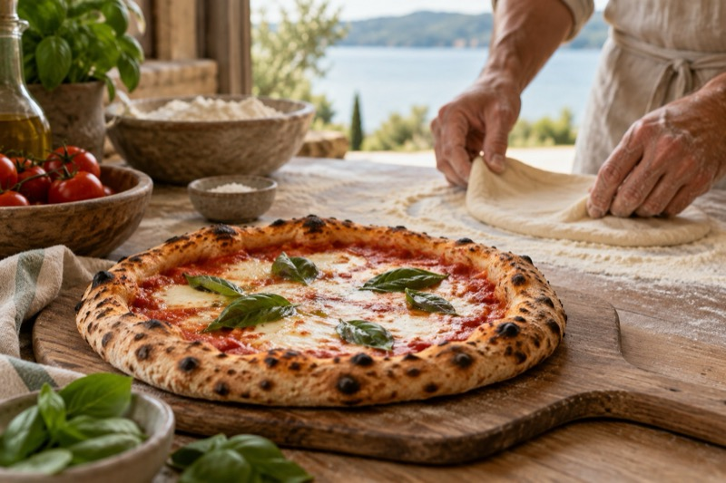
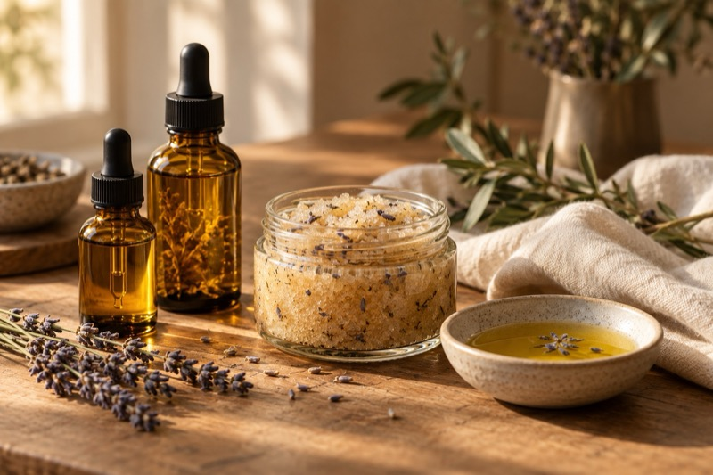

4nov
Pályaválasztási tréning szülőknek
Szilvay Gabi vezetésével
5 000 Ft / főmax. 48 fő
Workshopok · 2026 ősz–tél
Kislétszámú, közvetlen hangulatú programok a Farmer horgásztó partján, ahol együtt tanulhatunk, alkothatunk és kipróbálhatunk új dolgokat. A részletekért és a jelentkezéshez kattints a kártyára.
4nov
Pályaválasztási tréning szülőknek
Szilvay Gabi vezetésével
5 000 Ft / főmax. 48 fő

14nov
A nápolyi pizza titkai – pizzakészítés kezdőknek
Gorlami di Napoli
29 000 Ft / főmax. 10 fő
14nov
Természetes sminkoktatás fiataloknak
Viktor Zsuzsi profi sminkes
20 000 Ft / főmax. 6 fő
20nov
Téli teakeverő workshop
Nagy Szabina
20 000 Ft / főmax. 12 fő
28nov
Készítsd el saját adventi koszorúdat!
Faragó Edit virágkötő
29 000 Ft / főmax. 10 fő

5dec
Arcolaj- és bőrradír-készítő workshop
Nagy Szabina
25 000 Ft / főmax. 12 fő
Jó tudni
Ezek a feltételek minden workshopunkra egyformán vonatkoznak. A teljes szöveget a workshop feltételek oldalon találod.
A workshopra történő jelentkezés a részvételi díj megfizetésével válik véglegessé.
Minden workshopnál feltüntetjük, hány jelentkezővel indul. Ha ez nem jön össze, jogosultak vagyunk a workshopot megtartani, elhalasztani vagy lemondani – a minimum létszám el nem érése tehát nem jelenti automatikusan a program elmaradását.
Mivel workshopjainkat kis létszámmal tartjuk, és az alapanyagokat előre biztosítjuk: a workshop előtt több mint 10 nappal történő lemondás esetén a befizetett részvételi díj 50%-át visszatérítjük. A 10 napon belüli lemondás, illetve távolmaradás esetén a díj visszatérítésére nincs lehetőség.
Ha mégsem tudsz eljönni, a helyedet nyugodtan ajándékozd oda valakinek! Ilyenkor kérjük, legkésőbb a workshopot megelőző napig írásban jelezd nekünk az új résztvevő nevét és elérhetőségét az info@partonrendezveny.hu címen. A befizetett díj másik workshopra vagy későbbi időpontra nem vihető át.
Ha a workshopot mi mondjuk le – például a jelentkezők alacsony száma miatt –, a befizetett részvételi díjat teljes egészében visszatérítjük. Ha a programot új időpontban is meghirdetjük, választhatod azt is, hogy a befizetett összeget az új időpontra átvisszük.
Várunk szeretettel.
Kérdésed van valamelyik workshoppal kapcsolatban, vagy saját programot tartanál a Parton? Írj nekünk bátran.
Írj nekünk